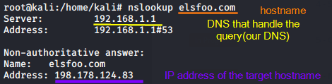
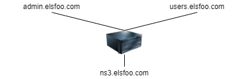

multiple domains for a single IP address
In this phase the first thing to do is resolve
all of the hostnames we have in order to determine what IP addresses are used by the organization

How many
domains
has the
Ip address
?
It is possible that more than one
domain is configured on the
same
IP address of the name server
examples
of scenarios: ◇ with shared hosting where hundreds of
websites
are configured on the
same server ◇ in corporate networks where multiple
subdomains run on the same
web server
 To find these domains we have to
do a
Reverse Lookup via
shell or with
online tools/websites
▪
nslookup -query=PTR www.elsfoo.com
▪
https://dnslytics.com/reverse-ip ▪
http://reverseip.domaintools.com/ ▪
https://www.robtex.com/ ▪
https://www.bing.com/search?q=ip:198.178.124.83
This is a
cyclical process every time we discover new
subdomains, this process regress to the step back of
DNS
enumeration